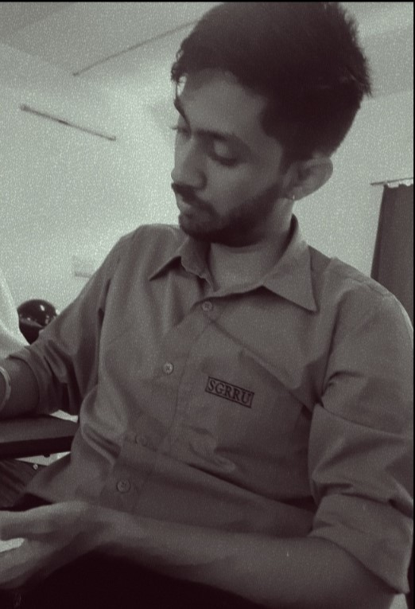

About Me
I am a skilled and experienced problem solver with a strong academic background and a passion for technology.
I hold a Master of Computer Application Degree from Shri Guru Ram Rai University in Dehradun, as well as a
Bachelor
of Science in Information Technology from the same university. I am proficient in a variety of programming
languages, including HTML, CSS, JavaScript, and With Basic knowledge of Python,React and Java and I am also
well-versed in web development
frameworks like Bootstrap.
I have a experience working on projects involving credit card fraud detection. I am also a skilled tutor,
having provided instruction to students in various subjects. In addition to my technical skills, I possess
strong communication and interpersonal skills, making me a valuable team player.
My recent project, a responsive Spotify clone app, showcases my ability to combine my passion for music with
my technical expertise. This project demonstrates my commitment to creating user-friendly and engaging
experiences.
Overall, I am a highly motivated and capable individual with a strong foundation in computer science and a
passion for innovation. I am always eager to learn new technologies and take on new challenges. I am an
ideal candidate for roles that require technical expertise, problem-solving skills, and a commitment to
delivering high-quality results
